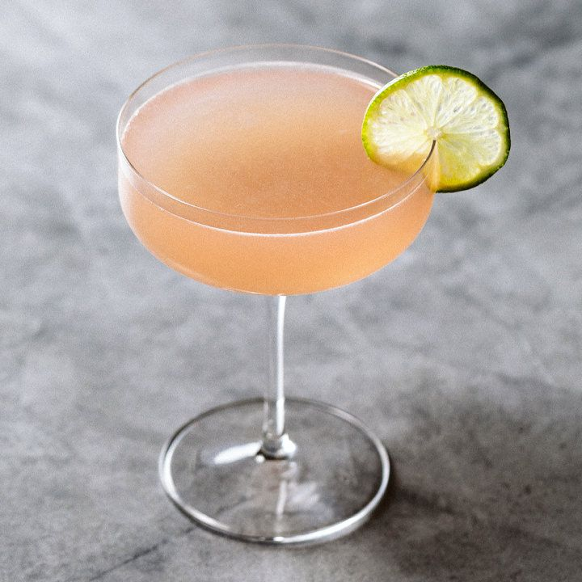

Cosmopolitan

The Cosmopolitan a classic cocktail with citrus and sweet notes to it. It gained its popularity
from Sex and the City TV series where the protagonists were always seen drinking these in New York City.
Ingredients
- 2 oz citrus vodka
- 0.5 oz Cointreau or triple sec
- 0.75 oz lime juice
- 0.75 oz cranberry juice
- lemon twist for garnish
Steps
- Pour vodka, cointreau, lime juice, and cranberry juice into your shaker
- Add ice to the shaker and shake for aeration and to chill the cocktail
- Double strain into a martini glass
- Garnish with lemon twist